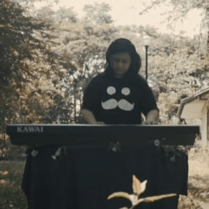
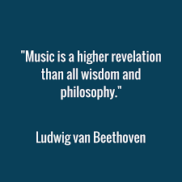

Why Music is the
Glue to Humanity
__ Homepage __

In this world of chaos and uncertainty, we are currently facing one of the biggest life-changers of the century. Not being able to go outside, most people find it hard without much to do inside the house. This leads people to find ways to cope, find ways to bond, or find ways… to do anything. We are bound by our walls, but technology makes it easy to simulate things from a simple hangout to a huge shindig.
What can spice it up more than a bit of music, calm or energetic? Stuck at home, what better things to do to practice an instrument with nothing better to do? Had similar experiences with a group of friends, why not let music unite everyone to relive the events? Music is an adhesive to relationships, it strengthens bonds, and it induces memories close-at-hand to one’s hearts. Here, I will give possible explanations to why music can be so powerful, and anecdotally give examples of instances where music had an impact to my life.
Made by Andre Craig R. Adan, this website was inspired by my family, my friends, my school, and my hobbies. They gave me the push I needed to create my love for music, create my scrutiny for music, and create this website. Although made for a school project, I hope this will reveal my mind not only to those reading, but to my own as well.
